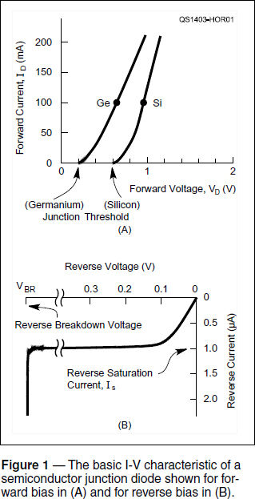
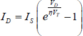
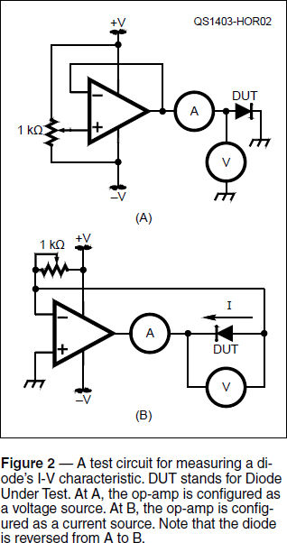
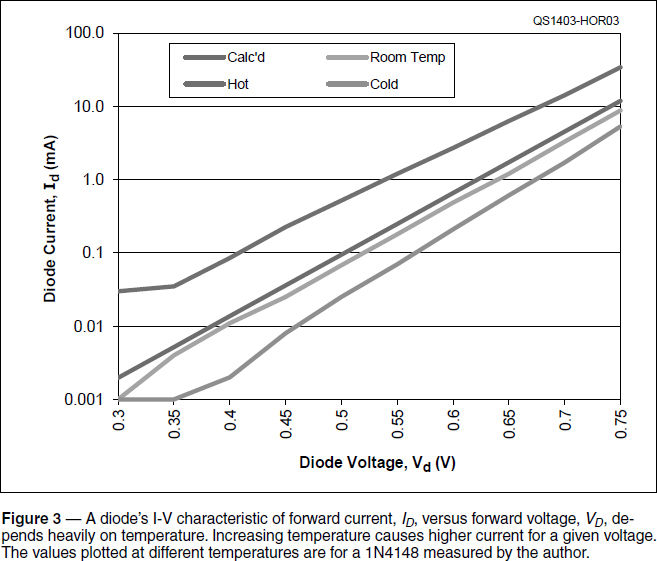
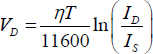

Experiment #134 — Effects of Junction Temperature
The equations describing how a bipolar junction transistor circuit works are usually simplified to ratios of resistances or currents. Many assumptions are made so that the calculations are straightforward — and most of the time this works just fine. The designer and technician should understand that underlying the simplifications and assumptions is a fundamental relationship that can have a major effect on how a circuit behaves as temperature changes. This month, you’ll observe the effect directly.
PN Junction Volt-Amp Characteristic
You’ve probably seen the basic graphs of Figure 1, perhaps combined in a single graph with different current scales for forward and reverse current. These graphs show the relationship between current and voltage — the I-V characteristic — for any semiconductor PN junction. The equation that generates the graphs is called the Fundamental Diode Equation. With positive for both voltage and current defined as from the P-type to the N-type material:


where ID is the forward current through the diode, VD is the forward voltage across the diode, and IS is the reverse-bias saturation current that flows when VD is negative. (Is is measured at the lowest voltage that will produce a stable current level — typically a few tens of mV of reverse bias and is much smaller than the typical values for reverse leakage current specified in datasheets.) η is the ideality factor (also called the quality factor or emission coefficient) that depends on how the carriers of current recombine at the diode junction and varies from 1 to 2. For normal currents, η = 2 works well for most diodes.
The most interesting bit of this equation is the thermal voltage, VT = kT/q where k is the Boltzmann constant that relates the energy of a particle (the electron) and its temperature, T is the absolute temperature in degrees Kelvin, and q is the charge of an electron. At room temperature (300 K is commonly used in simulation software), VT = 28.85 mV. A common simplification is that VT ≈ T / 11,600.
What happens as temperature increases? Since VT goes up along with T, if everything else on the right side of the equation stays constant, ID “should” go down. How about an experiment? Figure 2 shows a simple test circuit for evaluating a diode’s I-V characteristic. V and A represent a voltmeter and ammeter, respectively. Assuming you are using multimeters, set them to read 0 – 1 V and an initial current of 0 – 200 or 0 – 300 µA.

The op-amp is connected as an adjustable voltage source with its output set by the 10 kΩ pot. Any garden variety op-amp will suffice, such as the venerable LM741. Your power supply needs to have an output of at least ±3 V and up to ± 15 V will do if it is within the op-amp’s maximum voltage ratings.
Select an ordinary silicon diode such as a 1N914, 1N4148, or 1N4000-series part. Before connecting the diode, set the op-amp output voltage to 0.3 V on the voltmeter. Then connect the diode and slowly increase the voltage to 0.7 or 0.75 V in 0.05 V steps, recording both voltage and current. (A spreadsheet to generate a graph is provided on the Hands-On Radio web page.1) The measurements start at 0.3 V because current is too low to be measured with ordinary test equipment below that level. Most multimeters are not very accurate at the low end of their ranges so expect your measured values to diverge quite a bit from the calculated values.
Now cool the diode by at least 30 °C and measure the currents again. One way to get a relatively consistent temperature during the measurements is to put a metal object that is many times larger than the diode, such as a large nut, in your home freezer for an hour or so. Orient the diode so you can sit the object directly on it. Measure current through the diode and when the reading stabilizes begin taking data — you’ll have to work fast so the temperature remains about the same.
Why does ID have different values when the diode is cooled? Because the value of IS is strongly dependent on temperature, as is VT. In fact, for silicon diodes, the value of IS changes by about 7 % / °C, a positive shift with temperature. That means IS will double (or halve) with every 10 °C increase (or decrease) in temperature!
The two temperature dependencies for VT and IS work against each other. As temperature increases, VT goes up which works to lower ID because it is in the exponent’s denominator. On the other hand, increasing IS causes ID to increase. Thus, it is a balancing act with the change in IS having the larger effect. While the exact change requires some detailed calculations, around room temperature the net result is that VD changes about –2.2 mV / °C if current through the diode is held constant.
Next, go the other way: heat the diode by about the same amount (putting the metal object in hot water will do the job) and take the same set of measurements. Figure 3 shows a set of data I took for a 1N4148 diode. As you can see, below about 100 µA, my measurements started to show some signs of being inaccurate. (This is typical of low-level home-lab test setups, so don’t be too concerned if the data doesn’t make a nice straight line.) The diode you choose and the temperatures you obtain will probably give significantly different values of current — all you are trying to do is observe the effect of temperature.

If you’d like some extra credit, try taking the measurements by controlling ID and measuring VD. Figure 2B shows how to turn the op-amp into a current source. (See Experiment #3 — Op-Amps for an explanation of this circuit.)1 Start with a short circuit instead of the diode and confirm that with the pot set to maximum resistance, approximately +V / 10 kΩ of current is flowing. Reinstall the diode and adjust the current to get about the same values of VD as in the previous set of measurements. You should see fairly similar results.
Double your extra credit by trying a germanium diode, such as the common 1N34A. Germanium (Ge) diodes have a much higher value of IS than do silicon (Si) diodes by three to four orders of magnitude! Thus, the current values you measure will be much larger for a given value of VD. That can work to our advantage, however, because for a given amount of ID, a germanium diode will have a lower VD than a silicon diode. That may be an advantage in a sensitive circuit, such as a diode detector.
While you are at it, remember that a bipolar junction transistor is constructed from a pair of back-to-back PN junctions. Substitute the collector-base or emitter-base junction of an inexpensive PNP (2N3906 or 2N4404) or NPN (2N3904 or 2N4401) transistor for the diode. The resulting measurements should be fairly similar. Remember that temperature dependency when designing your next transistor amplifier!
Temperature Sensing
Since the effect of temperature on diode current and voltage are so predictable, it’s quite possible to make a temperature sensor out of a diode. Rearranging the diode equation gives

So you can see that measuring VD while holding ID constant gives a pretty good idea of temperature. Using a microprocessor to “do the math” or applying a comparator circuit to detect when VD crosses a threshold is an excellent method of temperature control at low cost.
Parts list
All parts can be substituted by any equivalent.
Op-amp — LM741
Silicon diode — 1N4148 or 1N4000-series
Germanium diode — LM34A
Transistor — 2N4401/4403 or 2N3904/3906
Potentiometer — 10 kΩ
1All previous Hands-On Radio experiments are available to ARRL members at www.arrl.org/hands-on-radio.